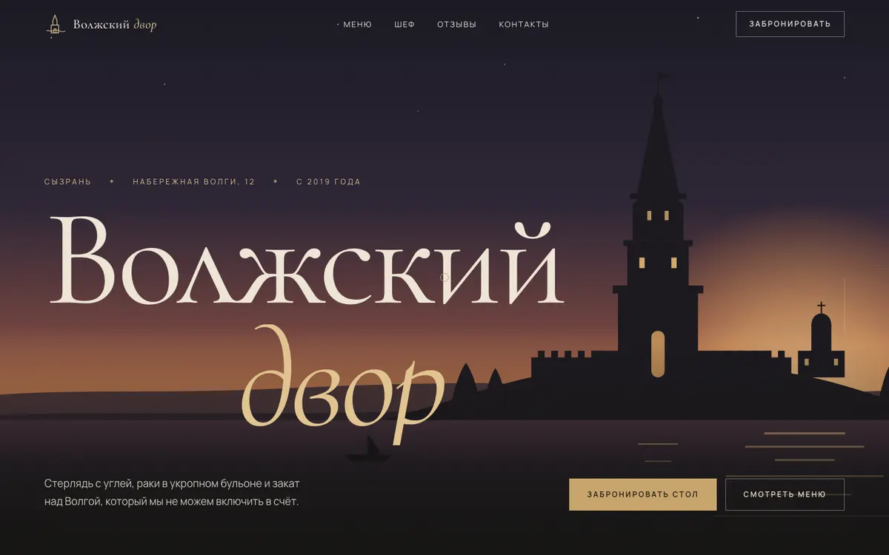
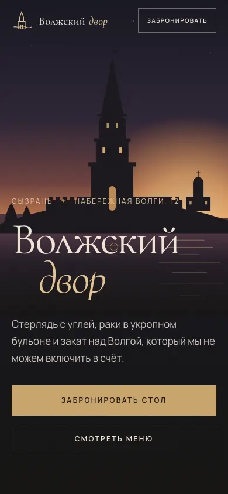

01 / РЕСТОРАН
Волжский двор
Тёмный luxury-editorial, как разворот глянцевого журнала. Волжская кухня, стерлядь и вид на Спасскую башню.
- SVG-сцена «вечерняя Волга» с параллаксом слоёв
- Горизонтальная лента фирменных блюд
- Меню с фильтром и FLIP-анимацией, бронь столика
Открыть сайт

